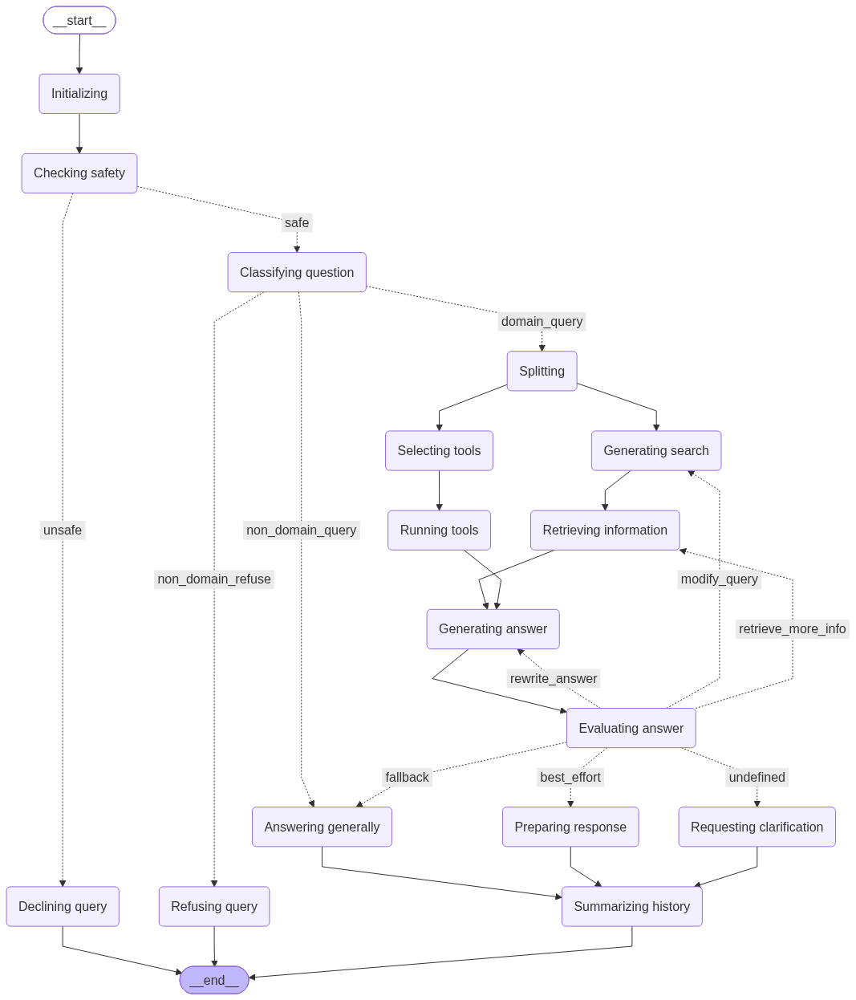

RAG¶
What is RAG?¶
Retrieval Augmented Generation (RAG) is an AI framework that retrieves facts from an external knowledge base to ground large language models (LLMs) on the most accurate, up-to-date information and to give users insight into LLMs’ generative process [Wikipedia].
Retrieval-augmented generation - Wikipedia https://en.wikipedia.org/wiki/Retrieval-augmented_generation
In simpler terms: instead of asking the LLM to answer from its (frozen, possibly outdated) training data alone, you first look up relevant documents in your own vector store and hand them to the LLM as context. The LLM’s answer is grounded in those documents, and the source can be cited – reducing hallucinations and making the process transparent.
Why RAG over fine-tuning?¶
RAG has several advantages over fine-tuning (retraining) a model on your data:
No training cost – no GPU needed, no training pipeline. RAG works with any LLM out of the box.
Incremental – add documents any time; no re-training needed.
Grounded answers – the LLM cites its sources. Fine-tuned models can still hallucinate facts they were trained on.
Transparent – you control the corpus. If an answer looks wrong, you can inspect the retrieved chunks.
Swap models freely – change the underlying LLM without rebuilding your knowledge base.
Fine-tuning still has its place (teaching a model an entirely new skill or output format), but for open-ended question answering over a document collection, RAG is the simpler and more maintainable choice.
Klea’s architecture¶
At a high level, a query flows through these stages:
Guard (optional) – a safety model (e.g.
llama-guard3) checks whether the query is safe and appropriate. Unsafe queries are declined immediately. SetKLEA_RAG_GUARD_MODELto an empty value to skip this step entirely.Classify – a chat model classifies the query into one of the configured domains (e.g. “NeuroML documentation”), or routes it to general chat, or refuses if no domain matches.
Retrieval – the system generates one or more search queries, optionally calls MCP tools (for live data), and retrieves the most relevant chunks from the matching domain’s stores (vector stores and/or BM25 keyword stores). Results from the different stores are combined with Reciprocal Rank Fusion (see Hybrid retrieval (vector + BM25)).
Answer – the chat model generates an answer from the retrieved context, citing its sources.
Evaluate – an evaluator checks the answer’s quality. If it is unsatisfactory, the system can loop back to retrieve more information, rewrite the query, or regenerate the answer.
Memory – conversation history is summarised per session so the system can refer to earlier exchanges.
The pipeline is implemented as a LangGraph state machine, using
the shared BaseLangGraph
orchestrator from klea_utils.
{kind=link}

The RAG pipeline visualised as a LangGraph state machine.¶
Domains and stores¶
Domains are the organising unit of Klea RAG:
A domain bundles related knowledge and configuration (e.g. “NeuroML documentation”, “My project’s internal docs”).
Each domain has one or more stores containing the chunks: vector stores (dense embedding similarity) and/or BM25 keyword stores (classic lexical search).
The classifier uses the domain’s description to decide where a query should go.
Domains can also have MCP servers attached, giving the LLM access to live tools (e.g. a validation server, a database query tool).
Each store’s name in the config must exactly match the
--collection name used when the store was created with
klea-stores-create, and its path must match the location the
chunks were written to. Retrieval looks stores up by name, so a
mismatch silently returns no results. For local Chroma stores the
path points at the store folder; the database file inside it is
always named chroma.sqlite3 (see
Create and use a RAG system). Chroma collections created by
klea-stores-create use cosine HNSW distance, so the vector-store
relevance score is a cosine similarity (and the retrieval
score_threshold reads as a minimum cosine similarity).
This means one RAG server can simultaneously serve completely different knowledge areas – the classifier routes queries to the right domain automatically.
Domain filter fields¶
Domains can declare retrieval filter fields with filter_fields:
a list of {name, description, value_type} entries. These are the
only metadata fields the retrieval query generator may constrain on –
the generator’s prompt lists exactly the fields the domain declares, so
it never proposes a filter on a metadata key that does not exist.
{
"name": "repository_type",
"description": "hosting type: github, dandi, biomodels or figshare",
"value_type": "string"
},
{
"name": "tags",
"description": "repository tags",
"value_type": "list"
}
value_type controls how a bare constraint is matched:
string/int/float– exact equality; a list of values becomes$in(any-of), and numeric fields also accept a range written as an operator expression (e.g.{"$gte": 2020, "$lte": 2025}).list– element membership ($contains): the metadata list must contain the stated value, and several values require every one to be present.
The description is shown to the retrieval query generator so it
knows when and how to populate each field.
Filters are domain-scoped: the whole domain (all of its stores) shares one declared set. This matches the expectation that the stores of a domain are built from the same corpus – and therefore carry the same metadata keys. When a query is routed to several domains, each domain only receives the filter clauses on the fields it declares, so a papers domain never has a repository filter applied to it (and vice versa).
Some practical notes:
Person-name fields (e.g.
authorson a papers domain) match partial names: stored author names are expanded with per-word variants at store time, so “Sinha” matches an author stored as “Ankur Sinha” (see Bibliographic metadata extraction).A domain that declares no
filter_fieldsgets unfiltered retrieval – queries are matched purely by semantic and lexical search. This is the right default for general documentation.A declared field only works on stores that actually store that metadata key; retrieval on a store missing the key yields nothing from that store for that constraint.
Hybrid retrieval (vector + BM25)¶
Each domain can configure vector_stores, bm25_stores, both, or
neither. BM25 provides a classic keyword search that complements
dense embedding similarity: exact names, symbols, and terminology that
a semantic search might miss are surfaced by the lexical match.
When a domain configures both, every query runs against all of the
domain’s stores and the results are combined with Reciprocal Rank
Fusion (RRF): a document is scored by its rank within each store’s
result list (1 / (60 + rank)), so results from the different stores
are merged without comparing their raw scores (cosine similarity and
BM25 scores are not on the same scale). Duplicate chunks are removed
and the top k references are kept.
The original per-source scores are preserved in each document’s
_source_scores metadata for debugging and introspection, but they are
not shown to the answer LLM.
These per-source scores are informational context, not a comparable
ranking. The vector-store score is a cosine similarity in [0, 1]
(1 = most similar to the query), while the BM25 score is a raw keyword
relevance value on an unbounded scale (higher = more matching terms).
The two are on different scales, so a BM25 value of e.g. 5.1 does
not mean the chunk is “better” than one with a vector-store score of
0.68. Documents are ordered by the RRF rank fusion above, never by
comparing these raw values.
After fusion, the RRF ranking is given a small recency bias
(rerank_by_recency): the pure RRF score is normalized to [0, 1]
and blended 0.9 * relevance + 0.1 * time, where the time term is
(year - year_min) / (year_max - year_min) across the retrieved set
(relative to the newest and oldest document retrieved). Documents
without a usable year get a neutral 0.5 time score. Because
academic work builds on – and often corrects – earlier results, a
newer document outranks an older one of equal relevance, while relevance
still dominates the final ordering.
To create a BM25 store alongside a vector store, pass
--bm25-store to klea-stores-create (see
Create and use a RAG system), then add a bm25_stores
entry to the domain config pointing at the written corpus file.
After storing, klea-stores-create store-lint <corpus.pkl> reviews the
corpus with deterministic, LLM-free checks: a summary (chunks, files,
chunks-per-file, total characters), suspicious chunks (near-empty text
from a conversion/OCR miss, or missing bibliographic metadata), and
structural problems (chunks without a file_name, invalid types). It
also prints --samples evenly-spaced windows of contiguous chunks so
you can eyeball that chunking and metadata look right. It is printed
automatically at the end of store when a BM25 corpus is written.
Reference material for the answer LLM¶
The fused retrieval results are handed to the answer LLM as reference material, grouped by source file. Each file’s shared bibliographic metadata (authors, year, journal, DOI) is shown once on a “source document” header, and the file’s chunks are listed underneath, numbered within the file. Chunk-level metadata that differs from the file’s (e.g. a heading-specific URL) stays inline on the chunk.
The documents appear in the blended priority order (relevance, with
recency as a tiebreaker) described above. Relevance scores are not
included in the reference material – the LLM relies on the given order,
not numeric values. Files are ordered by their best chunk’s score, and
chunks within a file by score. The exact serialized layout is described
in the serialize_reference_material
API reference.
Bibliographic metadata extraction¶
When documents are chunked, Klea automatically tries to populate the
per-file DEFAULT entry of metadata-map.template.json (written to
the source directory’s .klea-cache/) with bibliographic metadata
(title, authors, keywords, DOI, URL). This is a pre-population aid: the
researcher copies the template out, reviews and corrects the values
before storing, rather than filling the metadata map in from scratch.
Multiple URLs are written as separate keys (url_1, url_2, …);
each url* key is shown as its own reference in retrieval results and
passed to the answer LLM. A non-numeric key suffix becomes its display
label: rename url_1 to url_orcid in the template and the
reference panel shows orcid: <url>. When a DOI is found, the
DEFAULT entry also gets a url_doi key derived from it
(https://doi.org/<doi>).
The extraction runs a tiered cascade, most authoritative first; each tier only fills fields the tiers above it have not already set:
doi-service– a DOI discovered anywhere in the document is resolved via Crossref, OpenAlex and Semantic Scholar. The three APIs are queried in round-robin order to spread load, falling back to the others when one is rate-limited, and results are cached to disk so re-ingests never re-query. The resolved record’s title, authors, year, journal and DOI override everything below.pdf-info– the PDF Info dict (title, authors, keywords), read with pypdfium2. Often empty: many publishers ship no bibliographic fields in the PDF.docling– the free structured signals from Docling’s layout model: the title item, the origin mimetype/URI, and the hyperlinks on text items.layout-regex– regex over the focused first-page header region (the top fraction of page one, selected via the layout bounding boxes).regex– regex over the first ~3000 characters of the document.
Two internal keys are added to each file’s DEFAULT entry:
_metadata_complete–Trueonly when a full DOI record (title + authors + year) or a full PDF Info dict (title + author + keywords) was obtained;Falsemeans the researcher should review the entry._sources– the tiers that contributed at least one field, in precedence order (e.g.["doi-service", "regex"]).
These keys are internal: they guide the researcher reviewing the template, and are never shown to the answer LLM.
When storing, each file’s DEFAULT metadata is applied to every chunk,
and per-heading entries are merged over it. For a chunk, the metadata
map is matched from the most specific to the least specific entry: the
full heading chain (e.g. "Chapter 1 > 2.1 Neurons") first, then
progressively shorter suffixes ("2.1 Neurons"), then progressively
shallower ancestor chains ("Chapter 1"). The first non-empty
matching entry wins and is merged over DEFAULT (heading-specific keys
win, DEFAULT fills the rest). This means a leaf section with no
metadata of its own inherits its nearest ancestor’s – so a section with
no url of its own is referred to the closest parent that has one.
An empty {} placeholder simply falls through to the next candidate,
and finally to DEFAULT. klea-stores-create map-lint <dir> runs
deterministic, LLM-free checks over the map (missing fields, suspicious
titles or DOIs, year/filename mismatches, stale venue keys, excess
url* keys, and whether the top-level keys are the actual source
filenames) and is printed automatically after chunk; re-run it
after hand-editing the template. A source file with no map entry is
fatal (the store step would fail), so map-lint prints the full
report first and then exits non-zero; a map keyed by heading titles
instead of filenames is flagged as stale/heading-keyed.
DOI resolution uses the APIs’ polite pool when KLEA_INGEST_MAILTO
is set to an email address (higher rate limits). It is skipped
entirely when no DOI is found in the document. Optical character
recognition (OCR), which slows the conversion of text-based PDFs
considerably, can be disabled with klea-stores-create --no-ocr (see
Wikipedia
for details). Use klea-stores-create pre-check <dir> to classify
which PDFs actually need OCR (based on whether they carry an embedded
text layer) rather than guessing by publication year – see
Create and use a RAG system.
Docling selects the inference accelerator automatically (CUDA, MPS, or
CPU), but GPUs with a CUDA capability below 7.0 (e.g. a Quadro P1000)
cannot run the Triton-compiled layout model. Set the DOCLING_DEVICE
environment variable to cpu in that case (optionally raising
DOCLING_NUM_THREADS above the default of 4 to use more CPU cores);
see Create and use a RAG system for a worked example.
See Bibliographic metadata extraction (klea\_utils.biblio) for the Python API and
Create and use a RAG system for the chunk / store
workflow.
See also
Glossary – definitions of key terms
Create and use a RAG system – walk through setting up a RAG system end to end
klea-rag-serve – server CLI reference
klea-rag – client CLI reference (CLI, NiceGUI, Streamlit)